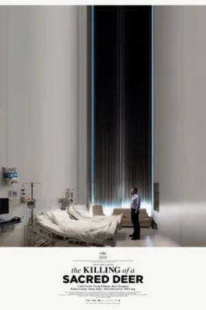
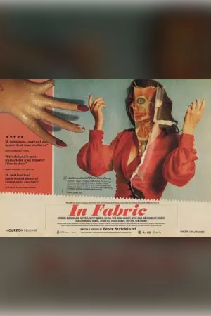
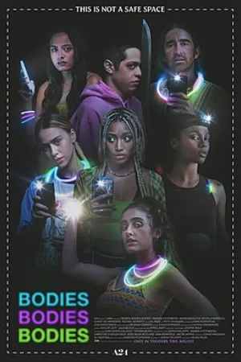
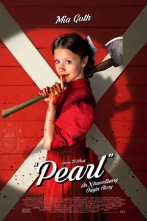
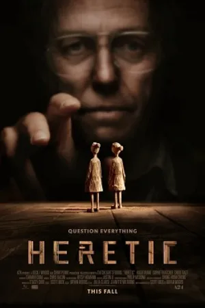
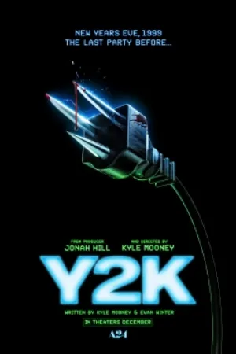
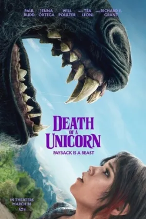
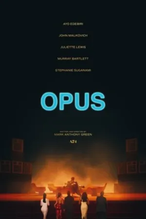

A24 horror movies in order.
A24’s horror films in the order they came out in the US, from Under the Skin to Bring Her Back. Most stand alone, so release order shows how the studio’s style grew. The one connected story is Ti West’s X trilogy, covered below.
Enter this code in Kuvacult to create this watchlist, already in order.
A24 horror in order
 1
1Under the Skin
 2
2The Witch
 3
3Green Room
 4
4It Comes at Night

5The Killing of a Sacred Deer
- 6
Hereditary
- 7
Climax

8In Fabric
- 9
Midsommar
- 10
The Lighthouse
- 11
Saint Maud
- 12
Lamb
- 13
X
- 14
Men

15Bodies Bodies Bodies

16Pearl
- 17
Talk to Me
- 18
MaXXXine

19Heretic

20Y2K

21Death of a Unicorn

22Opus
- 23
Bring Her Back
The X trilogy in story order
Ti West’s three films share a story. Watch them in release order for the intended reveals, or in story order below.
- 1
Pearl
- 2
X
- 3
MaXXXine
Questions
Are A24 horror movies connected?
Almost never. Each film is a standalone story. The exception is Ti West’s X trilogy: X, Pearl and MaXXXine.
What order should I watch the X trilogy in?
Release order is X, Pearl, MaXXXine. In story order, Pearl comes first because it is set in 1918, then X in 1979 and MaXXXine in 1985.
What is the best A24 horror movie to start with?
Hereditary, The Witch and Talk to Me are common starting points. Each one works without seeing any other A24 film.
More chronological orders


Watch it with your friends.
Kuvacult is a free movie tracker with shared watchlists, a veto game for picking movie night, and séances for watching together.